Integrated concepts only. Each variant changes the actual ring or core stroke geometry instead of placing decorative motifs on top.
01 - Lens Handle
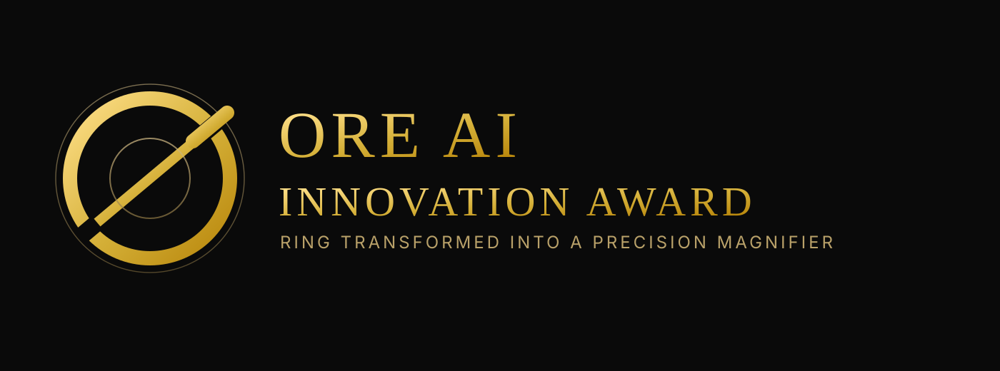
Ring transformed into magnifier logic.
02 - Sine Axis
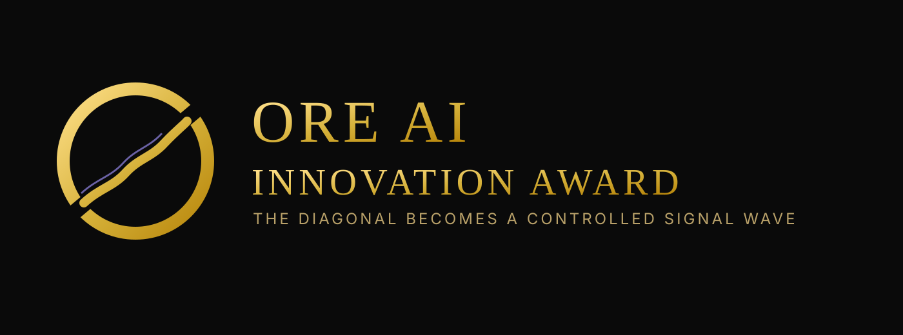
Diagonal core rebuilt as a signal wave.
03 - Candlestick Spine
Core geometry reimagined as candlesticks.
04 - Spectrum Spine
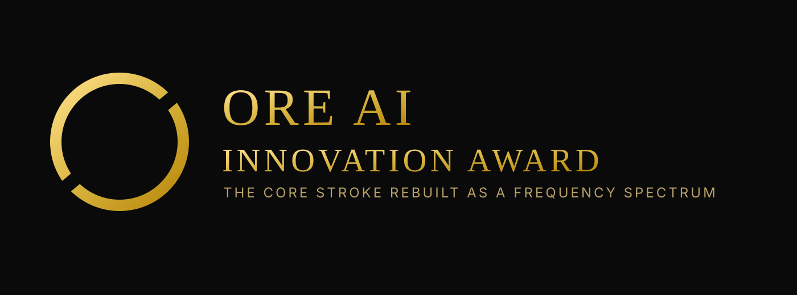
Fourier-like spectrum inside the core axis.
05 - Binary Spine
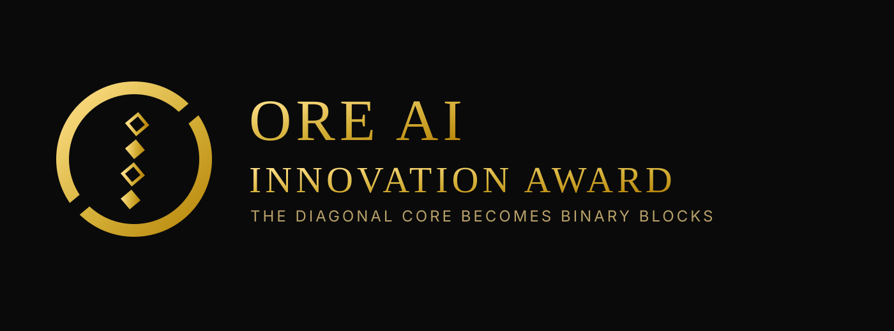
Binary blocks replace the diagonal bar.
06 - C++ Spine
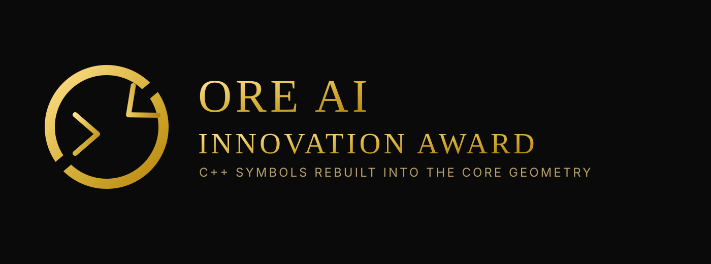
C++ symbols baked into core geometry.
07 - Vol Smile Cut
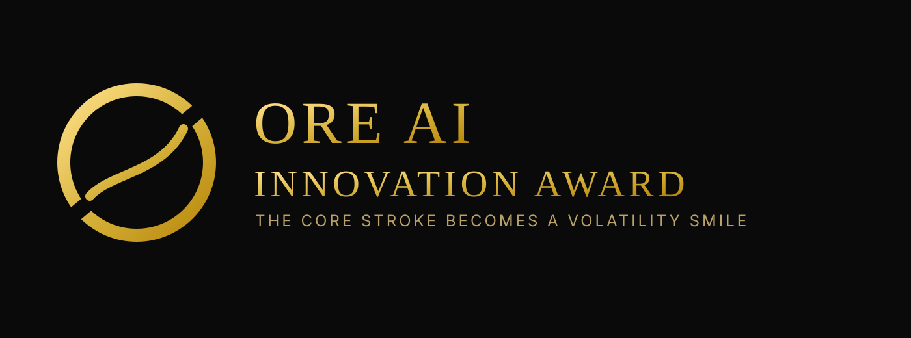
Volatility smile becomes the main stroke.
08 - Greek Delta Core
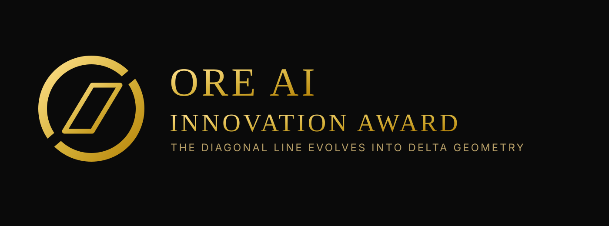
Delta shape derived from the diagonal axis.
09 - Payoff Hockey Stick
Options payoff integrated into the mark.
10 - Dual Wave Ring
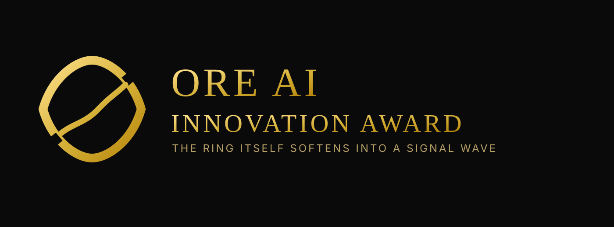
The ring itself bends into signal language.
11 - Orbit Probe
Diagonal line becomes path + destination.
12 - Gyro Cut
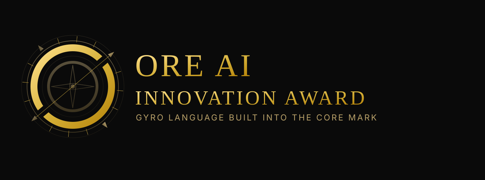
Inner ring and bar form an instrument dial.
13 - Theta Core
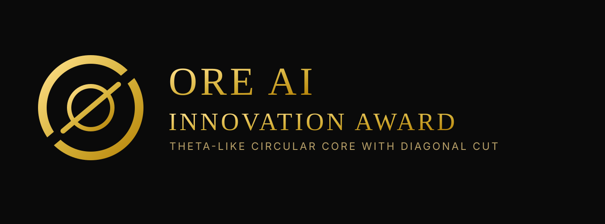
Theta-like circular core cut by diagonal.
14 - Fourier Cut Ring
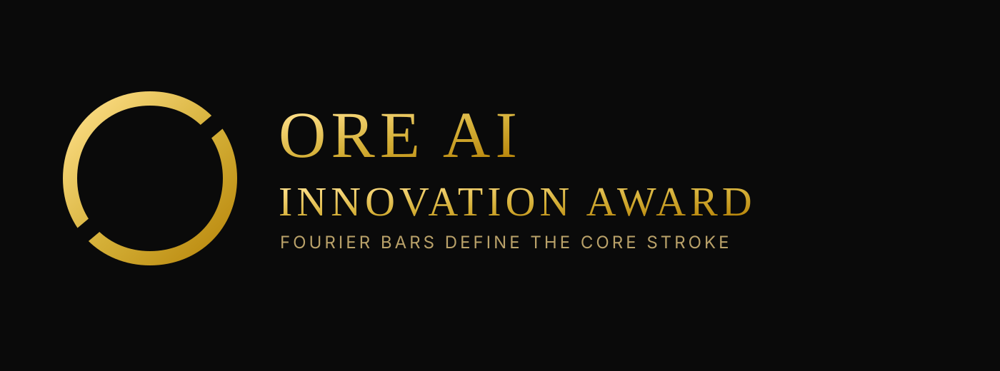
Spectrum bars shape the core language.
15 - Integrated Hybrid
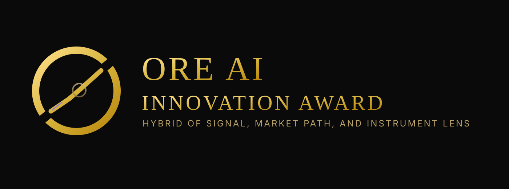
Combined signal, market path, and lens logic.
16 - Axon Brain-Chip Maze
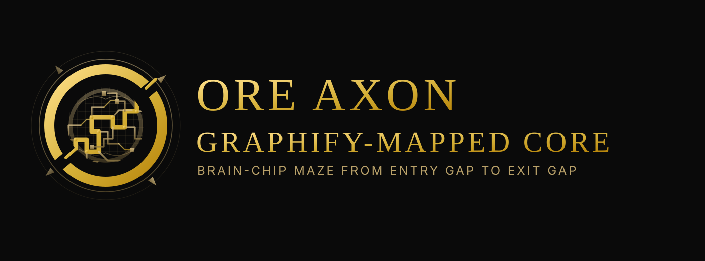
Maze + circuit traces route from bottom-left gap to top-right gap.
17 - Axon Brain Mesh
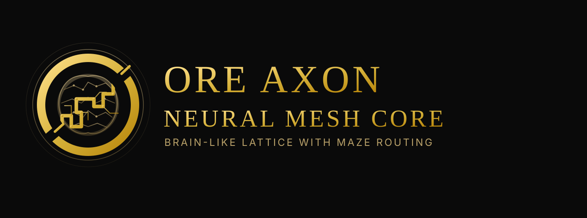
Neural-node brain lattice integrated with maze routing.
18 - Axon Circular Chip
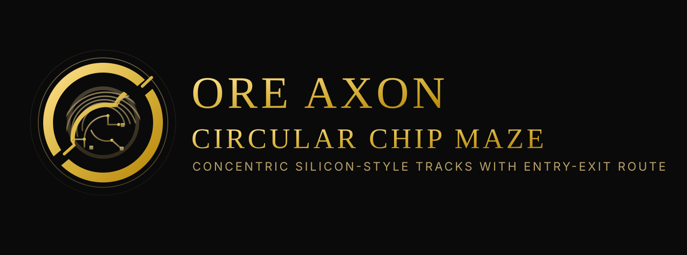
Concentric chip-labyrinth tracks inspired by circular PCB traces.
19 - Axon Neurochip Hybrid
Brain silhouette merged with orthogonal chip-routing language.
20 - Axon Clean Circuit
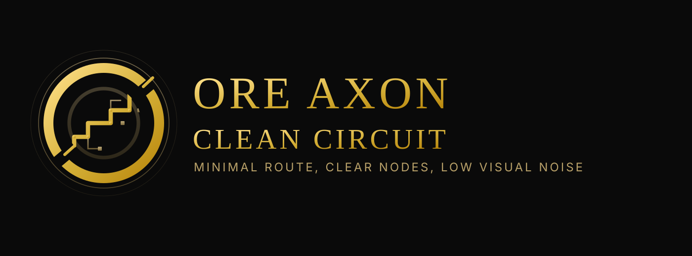
Minimal orthogonal pathing with controlled node count.
21 - Axon Clean Brain
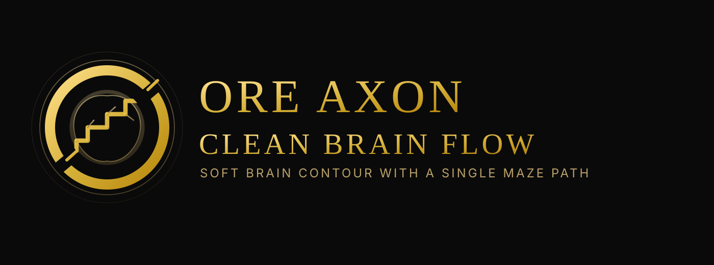
Clean bilateral brain contour with single route flow.
22 - Axon Clean Hybrid
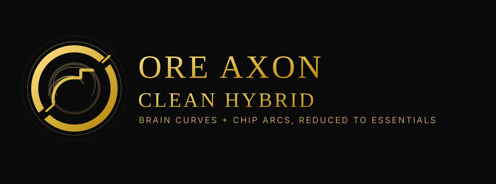
Balanced brain-chip cues reduced to essentials.
23 - Axon Iconic Brain
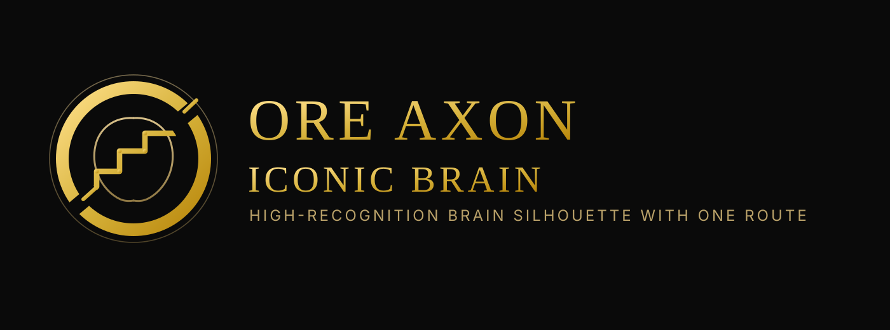
Highest-recognition brain silhouette with one clear route.
24 - Axon Iconic Chip
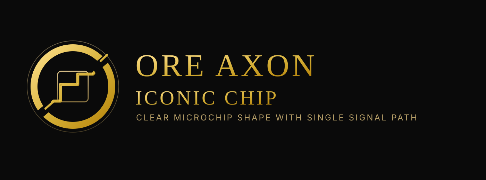
Explicit microchip geometry with a single signal path.
25 - Axon Iconic Fusion
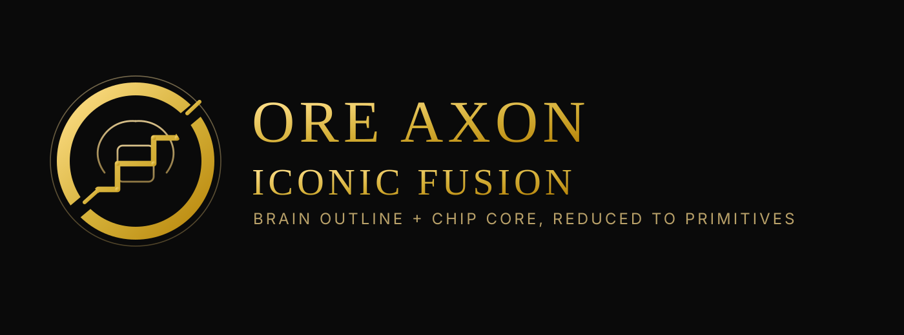
Simple brain contour around a chip-like core.
26 - Axon Brain Symbol
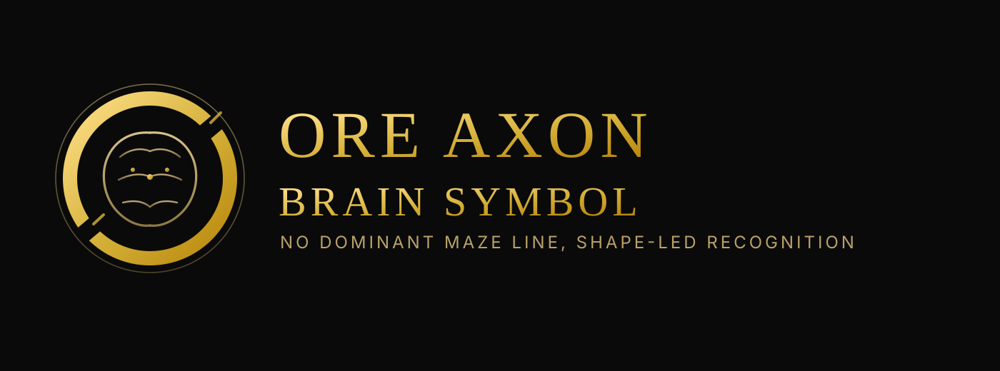
Shape-first brain mark with optional routing hints only.
27 - Axon Chip Symbol
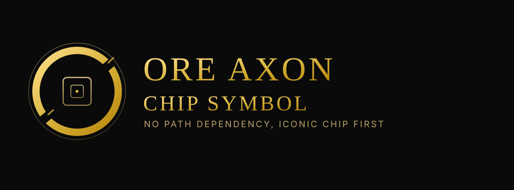
Pure chip iconography with no dominant maze stroke.
28 - Axon Fusion Symbol
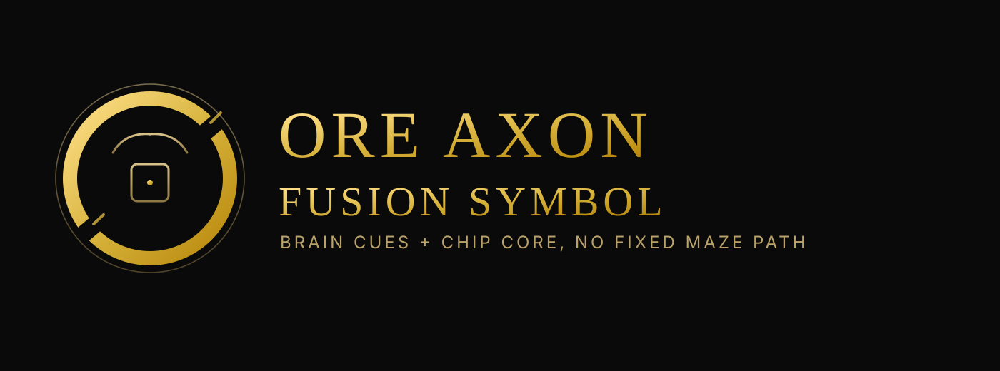
Balanced brain-chip symbol where pathing is non-essential.
29 - Axon Radial Maze Core
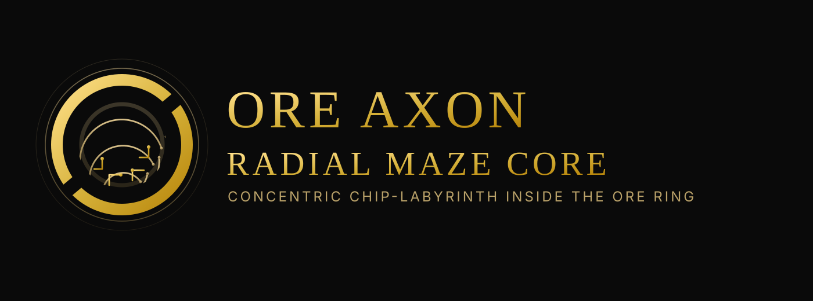
Fresh restart inspired by concentric radial maze logic inside the ORE ring.
30 - Axon Concentric Base
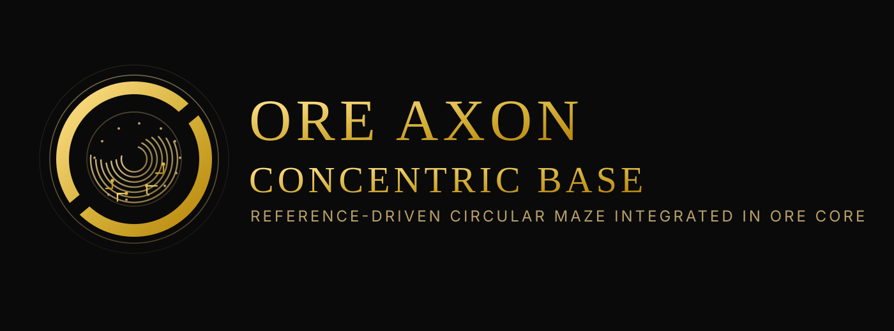
Directly reference-driven concentric circular maze integrated in the ORE core.